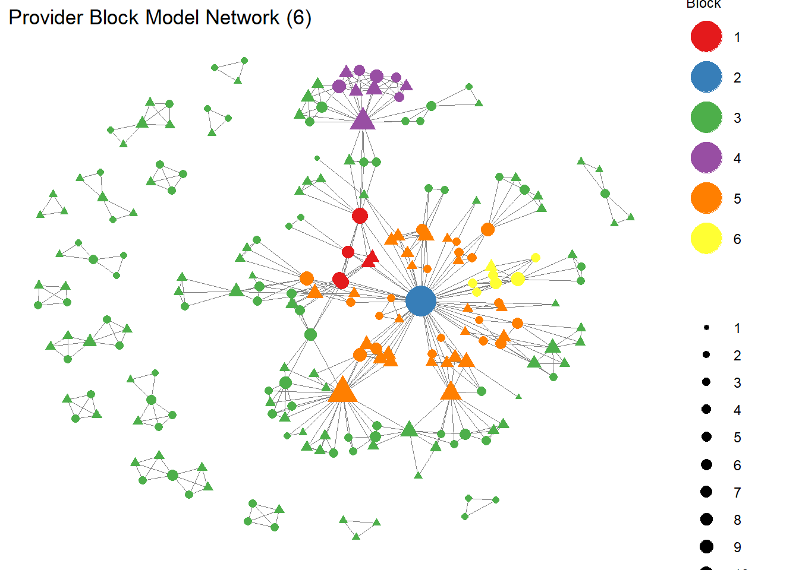
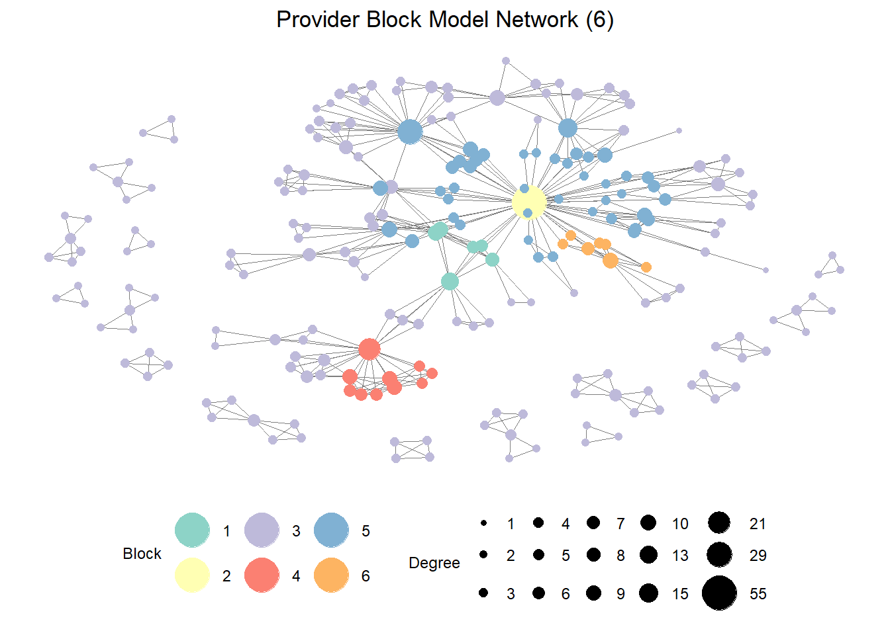
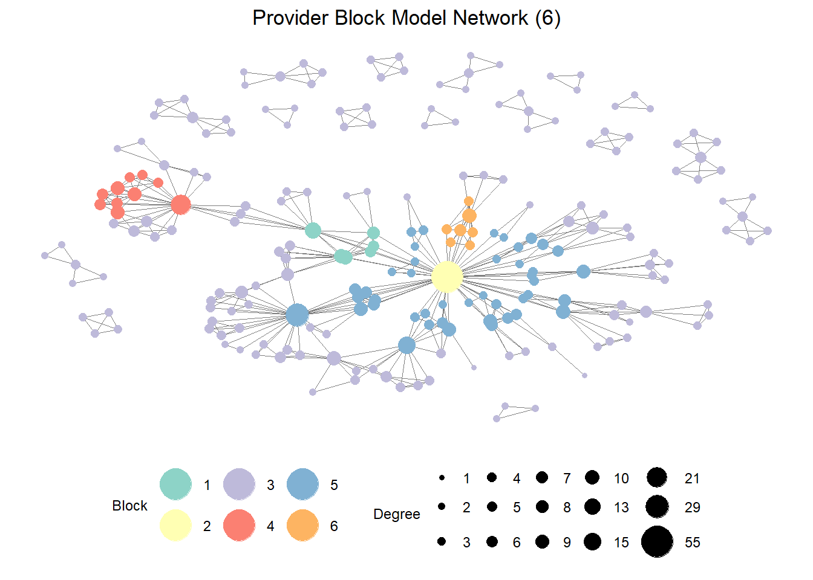
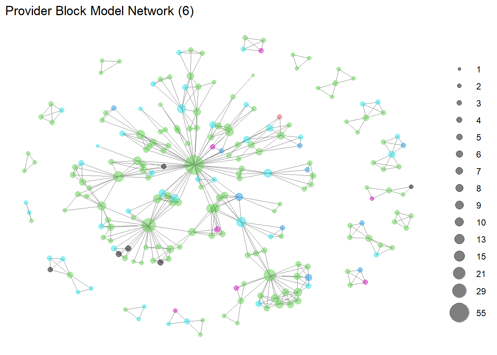
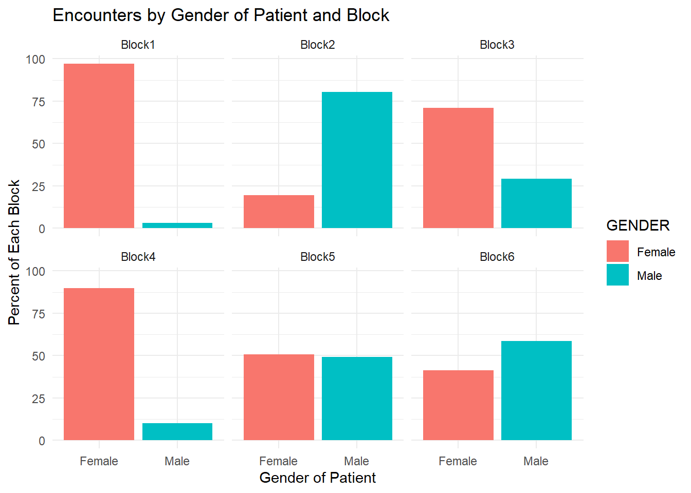

library(tidyverse)
library(readr)
library(igraph)
library(sna)
library(intergraph)
library(ggplot2)
library(sf)
library(tidyverse)
library(tmap)
library(tigris)
library(stplanr)This post will explore block attributes in the Provider Network data.
Read in Data
pat_attr <- read_csv("post5drug_data/pat_attr.csv",
col_types = cols(...1 = col_skip()))
pro_attr <- read_csv("post5drug_data/pro_attr.csv",
col_types = cols(...1 = col_skip()))
encounters_cleaning <- read_csv("post5drug_data//encounters_cleaning.csv",
col_types = cols(...1 = col_skip()))
encounters_cleaned <- read_csv("post5drug_data//encounters_cleaned.csv",
col_types = cols(...1 = col_skip()))
encounter_attributes <- read_csv("post5drug_data/encounter_attributes.csv",
col_types = cols(...1 = col_skip()))
encounters_el <- read_csv("post5drug_data/encounters_el.csv",
col_types = cols(...1 = col_skip()))
encounters_st_3 <- read_csv("post5drug_data/encounters.st.3.csv",
col_types = cols(...1 = col_skip()))
attribute_list <- read.csv("post5drug_data/attribute_list.csv")
pat_blks6 <- readRDS("pat_blks6_results.rds")
prov_blks6 <- readRDS("prov_blks6_results.rds")Create bipartite network with attributes
encounters.stat <- network(encounters_el,
directed = FALSE,
bipartite = TRUE,
matrix.type = "edgelist",
vertex.attr = attribute_list)#create igraph
encounters.ig <- graph_from_biadjacency_matrix(encounters.stat)encounters.stat2 <- asNetwork(encounters.ig)projected_graph <- bipartite_projection(encounters.ig)colnames(encounters_cleaned) [1] "ENCOUNTER_ID" "START" "STOP"
[4] "PATIENT" "ORGANIZATION.x" "PROVIDER"
[7] "PAYER" "ENCOUNTERCLASS" "CODE"
[10] "DESCRIPTION" "BASE_ENCOUNTER_COST" "TOTAL_CLAIM_COST"
[13] "PAYER_COVERAGE" "REASONCODE" "REASONDESCRIPTION"
[16] "ORGANIZATION.y" "GENDER.x" "SPECIALITY"
[19] "ADDRESS.x" "CITY.x" "STATE.x"
[22] "ZIP.x" "LAT.x" "LON.x"
[25] "ENCOUNTERS" "PROCEDURES" "BIRTHDATE"
[28] "DEATHDATE" "SSN" "DRIVERS"
[31] "PASSPORT" "PREFIX" "SUFFIX"
[34] "MAIDEN" "MARITAL" "RACE"
[37] "ETHNICITY" "GENDER.y" "BIRTHPLACE"
[40] "ADDRESS.y" "CITY.y" "STATE.y"
[43] "COUNTY" "FIPS" "ZIP.y"
[46] "LAT.y" "LON.y" "HEALTHCARE_EXPENSES"
[49] "HEALTHCARE_COVERAGE" "INCOME" "AGE" PROVIDER
provider_matrix <- as.matrix(as_adjacency_matrix(projected_graph$proj2))
library(intergraph)
detach("package:igraph")
library(statnet)
provider.stat <- asNetwork(projected_graph$proj2)
provider.se <- equiv.clust(provider_matrix,
equiv.fun = "sedist",
method = "hamming",
mode = "graph",
cluster.method = "complete")blk_model.provider.org <- blockmodel(provider_matrix,
provider.se, k = 6)prov_blks6 <- readRDS("prov_blks6_results.rds")# blockmodel with optimized partition
prov_blk_mod <- blockmodel(provider_matrix, prov_blks6$best$best1$clu,
plabels = rownames(provider_matrix))#assign block membership to vertex attribute
provider.stat%v%"role"<-prov_blk_mod$block.membership[match(provider.stat%v%"vertex.names",prov_blk_mod$plabels)]
#plot network using "role" to color nodes
GGally::ggnet2(provider.stat,
node.color="role",
node.shape = pro_attr$GENDER,
color.palette = "Set1", # color palette
color.legend = "Block", # legend title for node color
node.size=sna::degree(provider.stat, gmode= "graph"),
node.alpha = 1) + ggtitle("Provider Block Model Network (6)")Registered S3 method overwritten by 'GGally':
method from
+.gg ggplot2
# block model graph using ggnet2
GGally::ggnet2(provider.stat,
node.color = "role",
node.size=sna::degree(provider.stat, gmode= "graph"),
node.alpha = 1,
size.legend = "Degree", # legend title for node size
color.palette = "Set3", # color palette
color.legend = "Block", # legend title for node color
legend.position = "bottom", # legend at the bottom
label = NA, # node labels
label.size = 3, # label size
label.trim = TRUE # trim long labels
) +
ggtitle("Provider Block Model Network (6)") +
theme(plot.title = element_text(hjust = 0.5)) # center align plot title
# block model graph using ggnet2
GGally::ggnet2(provider.stat,
node.color = "role",
node.size=sna::degree(provider.stat, gmode= "graph"),
node.alpha = 1,
size.legend = "Degree", # legend title for node size
color.palette = "Set3", # color palette
color.legend = "Block", # legend title for node color
legend.position = "bottom", # legend at the bottom
label = NA, # node labels
label.size = 3, # label size
label.trim = TRUE # trim long labels
) +
ggtitle("Provider Block Model Network (6)") +
theme(plot.title = element_text(hjust = 0.5)) # center align plot title
GGally::ggnet2(provider.stat,
node.color=pro_attr$block,
node.size=sna::degree(provider.stat, gmode="graph"),
node.alpha = .5) + ggtitle("Provider Block Model Network (6)")
Hmm, this doesn’t look at all like the graph showing blocks… Not sure what’s going on here. I’ll attempt to assign attributes a different way.
attributes <- dumpAttr(provider.stat)
# Extracting roles and vertex names
roles <- attributes$vertex$role
vertex_names <- attributes$vertex$vertex.names
# Creating a dataframe
role_vertex_df <- data.frame(vertex.names = vertex_names, role = roles)
# Displaying the first few rows of the dataframe
head(role_vertex_df %>%
arrange(desc(vertex.names))) vertex.names role
1 Zachery872 Rau926 1
2 Zachery872 Pagac496 3
3 Waylon572 Lakin515 3
4 Virgen207 Hyatt152 5
5 Vicente970 Armstrong51 5
6 Vern731 Casper496 3head(pro_attr %>%
arrange(desc(NAME)))# A tibble: 6 × 5
NAME GENDER CITY type block
<chr> <chr> <chr> <chr> <dbl>
1 Zachery872 Rau926 Male walpole PROVIDER 1
2 Zachery872 Pagac496 Male melrose PROVIDER 3
3 Waylon572 Lakin515 Male woburn PROVIDER 3
4 Virgen207 Hyatt152 Female stoneham PROVIDER 5
5 Vicente970 Armstrong51 Male stoneham PROVIDER 5
6 Vern731 Casper496 Male swampscott PROVIDER 3# Extracting vertex attributes
vertex_data <- data.frame(
role = get.vertex.attribute(provider.stat, "role"),
vertex.names = get.vertex.attribute(provider.stat, "vertex.names")
)
# Displaying the first few rows of the dataframe
head(vertex_data) role vertex.names
1 3 Elijah719 White193
2 3 Fidel864 Swift555
3 5 Virgen207 Hyatt152
4 3 Zachery872 Pagac496
5 3 Kristopher775 Schiller186
6 3 Laine739 Torphy630Create New Attribute Lists
pro_attr_list <- do.call(list, pro_attr)provider.st <- network(provider_matrix,
directed = FALSE,
matrix.type = "adjacency",
vertex.attr = pro_attr_list)BLOCK ATTRIBUTES:
Where are the blocks located? Are there any overlaps?
# CITY
# Define a function to summarize encounters for a given block
summarize_block <- function(block_num, pro_attr, encounters_cleaned) {
# Filter provider names for the given block
block_providers <- pro_attr %>%
filter(block == block_num) %>%
pull(NAME)
# Filter encounters for providers in the given block
block_df <- encounters_cleaned %>%
filter(PROVIDER %in% block_providers) %>%
group_by(CITY.x) %>%
summarize(COUNT = n()) %>%
ungroup() %>%
arrange(desc(COUNT))
# Calculate the total count of encounters
total_count <- sum(block_df$COUNT)
# Calculate the percentage of total encounters for each ENCOUNTERCLASS
block_df <- block_df %>%
mutate(PERCENT = (COUNT / total_count) * 100)
return(block_df)
}
# Call the function for each block and store the results in a list
block_results <- lapply(1:6, function(block_num) {
summarize_block(block_num, pro_attr, encounters_cleaned)
})
# View the summary data for each block
names(block_results) <- paste0("Block", 1:6)
print(block_results)$Block1
# A tibble: 6 × 3
CITY.x COUNT PERCENT
<chr> <int> <dbl>
1 natick 84 62.7
2 walpole 34 25.4
3 medfield 5 3.73
4 milford 5 3.73
5 westwood 5 3.73
6 franklin 1 0.746
$Block2
# A tibble: 1 × 3
CITY.x COUNT PERCENT
<chr> <int> <dbl>
1 fitchburg 123 100
$Block3
# A tibble: 86 × 3
CITY.x COUNT PERCENT
<chr> <int> <dbl>
1 attleboro 182 6.52
2 boston 152 5.45
3 worcester 141 5.05
4 new bedford 138 4.94
5 northampton 129 4.62
6 taunton 121 4.34
7 weymouth 100 3.58
8 melrose 91 3.26
9 ware 90 3.22
10 framingham 80 2.87
# ℹ 76 more rows
$Block4
# A tibble: 3 × 3
CITY.x COUNT PERCENT
<chr> <int> <dbl>
1 waltham 661 94.2
2 auburndale 28 3.99
3 waban 13 1.85
$Block5
# A tibble: 23 × 3
CITY.x COUNT PERCENT
<chr> <int> <dbl>
1 peabody 742 34.2
2 leominster 309 14.2
3 hyannis 198 9.12
4 attleboro 117 5.39
5 stoneham 107 4.93
6 middleton 88 4.06
7 cambridge 70 3.23
8 worcester 70 3.23
9 fitchburg 68 3.13
10 south yarmouth 68 3.13
# ℹ 13 more rows
$Block6
# A tibble: 3 × 3
CITY.x COUNT PERCENT
<chr> <int> <dbl>
1 lynn 181 95.8
2 peabody 6 3.17
3 saugus 2 1.06Block 1 is right outside of Boston Block 2, only one provider, Fitchburg. Block 3 is everywhere. Block 4 is Heavy Waltham representation Block 5 is a bit of everyone. Block 6 is Northshore.
library(treemapify)Warning: package 'treemapify' was built under R version 4.3.2# Combine the data frames into one long data frame
combined_df <- bind_rows(block_results, .id = "Block")
# View the combined data frame
print(combined_df)# A tibble: 122 × 4
Block CITY.x COUNT PERCENT
<chr> <chr> <int> <dbl>
1 Block1 natick 84 62.7
2 Block1 walpole 34 25.4
3 Block1 medfield 5 3.73
4 Block1 milford 5 3.73
5 Block1 westwood 5 3.73
6 Block1 franklin 1 0.746
7 Block2 fitchburg 123 100
8 Block3 attleboro 182 6.52
9 Block3 boston 152 5.45
10 Block3 worcester 141 5.05
# ℹ 112 more rowsggplot(combined_df, aes(x= Block, y = PERCENT, fill = CITY.x)) + geom_bar(stat = "identity") +
labs(title = "Encounters by City of Provider and Block",
x = "Description",
y = "Percent of Each Block",
fill = "GENDER") +
theme_minimal()ggplot(combined_df, aes(area=PERCENT, fill=CITY.x)) + geom_treemap() + facet_wrap("Block") + labs(title = "Encounters by City of Provider and Block")What are the types of encounters within the blocks?
# ENCOUNTERCLASS
# Define a function to summarize encounters for a given block
summarize_block <- function(block_num, pro_attr, encounters_cleaned) {
# Filter provider names for the given block
block_providers <- pro_attr %>%
filter(block == block_num) %>%
pull(NAME)
# Filter encounters for providers in the given block
block_df <- encounters_cleaned %>%
filter(PROVIDER %in% block_providers) %>%
group_by(ENCOUNTERCLASS) %>%
summarize(COUNT = n()) %>%
ungroup() %>%
arrange(desc(COUNT))
# Calculate the total count of encounters
total_count <- sum(block_df$COUNT)
# Calculate the percentage of total encounters for each ENCOUNTERCLASS
block_df <- block_df %>%
mutate(PERCENT = (COUNT / total_count) * 100)
return(block_df)
}
# Call the function for each block and store the results in a list
block_results <- lapply(1:6, function(block_num) {
summarize_block(block_num, pro_attr, encounters_cleaned)
})
# View the summary data for each block
names(block_results) <- paste0("Block", 1:6)
print(block_results)$Block1
# A tibble: 8 × 3
ENCOUNTERCLASS COUNT PERCENT
<chr> <int> <dbl>
1 ambulatory 63 47.0
2 wellness 34 25.4
3 outpatient 20 14.9
4 emergency 9 6.72
5 urgentcare 5 3.73
6 hospice 1 0.746
7 inpatient 1 0.746
8 snf 1 0.746
$Block2
# A tibble: 6 × 3
ENCOUNTERCLASS COUNT PERCENT
<chr> <int> <dbl>
1 ambulatory 64 52.0
2 inpatient 19 15.4
3 outpatient 18 14.6
4 wellness 15 12.2
5 emergency 6 4.88
6 hospice 1 0.813
$Block3
# A tibble: 10 × 3
ENCOUNTERCLASS COUNT PERCENT
<chr> <int> <dbl>
1 ambulatory 1255 45.0
2 wellness 701 25.1
3 outpatient 519 18.6
4 emergency 197 7.06
5 inpatient 63 2.26
6 urgentcare 23 0.824
7 home 15 0.537
8 snf 9 0.322
9 hospice 8 0.287
10 virtual 1 0.0358
$Block4
# A tibble: 7 × 3
ENCOUNTERCLASS COUNT PERCENT
<chr> <int> <dbl>
1 ambulatory 397 56.6
2 urgentcare 139 19.8
3 outpatient 102 14.5
4 emergency 33 4.70
5 wellness 27 3.85
6 inpatient 3 0.427
7 hospice 1 0.142
$Block5
# A tibble: 9 × 3
ENCOUNTERCLASS COUNT PERCENT
<chr> <int> <dbl>
1 ambulatory 1126 51.9
2 outpatient 321 14.8
3 urgentcare 305 14.1
4 wellness 267 12.3
5 emergency 80 3.69
6 home 33 1.52
7 inpatient 33 1.52
8 snf 4 0.184
9 virtual 1 0.0461
$Block6
# A tibble: 8 × 3
ENCOUNTERCLASS COUNT PERCENT
<chr> <int> <dbl>
1 ambulatory 61 32.3
2 outpatient 53 28.0
3 wellness 48 25.4
4 urgentcare 15 7.94
5 emergency 7 3.70
6 inpatient 2 1.06
7 snf 2 1.06
8 hospice 1 0.529library(treemapify)
# Combine the data frames into one long data frame
combined_df <- bind_rows(block_results, .id = "Block")
# View the combined data frame
print(combined_df)# A tibble: 48 × 4
Block ENCOUNTERCLASS COUNT PERCENT
<chr> <chr> <int> <dbl>
1 Block1 ambulatory 63 47.0
2 Block1 wellness 34 25.4
3 Block1 outpatient 20 14.9
4 Block1 emergency 9 6.72
5 Block1 urgentcare 5 3.73
6 Block1 hospice 1 0.746
7 Block1 inpatient 1 0.746
8 Block1 snf 1 0.746
9 Block2 ambulatory 64 52.0
10 Block2 inpatient 19 15.4
# ℹ 38 more rowsggplot(combined_df, aes(x= Block, y = PERCENT, fill = ENCOUNTERCLASS)) + geom_bar(stat = "identity") +
labs(title = "Class of Encounters by Blocks",
x = "Description",
y = "Percent of Each Block",
fill = "GENDER") +
theme_minimal()
ggplot(combined_df, aes(area=PERCENT, fill=ENCOUNTERCLASS)) + geom_treemap() + facet_wrap("Block") + labs(title = "Class of Encounters by Blocks")DESCRIPTION
encounters_cleaned <- encounters_cleaned %>%
mutate(
DESCRIPTION = tolower(DESCRIPTION))
# DESCRIPTION
# Define a function to summarize encounters for a given block
summarize_block <- function(block_num, pro_attr, encounters_cleaned) {
# Filter provider names for the given block
block_providers <- pro_attr %>%
filter(block == block_num) %>%
pull(NAME)
# Filter encounters for providers in the given block
block_df <- encounters_cleaned %>%
filter(PROVIDER %in% block_providers) %>%
group_by(DESCRIPTION) %>%
summarize(COUNT = n()) %>%
ungroup() %>%
arrange(desc(COUNT))
# Calculate the total count of encounters
total_count <- sum(block_df$COUNT)
# Calculate the percentage of total encounters for each DESCRIPTION
block_df <- block_df %>%
mutate(PERCENT = (COUNT / total_count) * 100)
return(block_df)
}
# Call the function for each block and store the results in a list
block_results <- lapply(1:6, function(block_num) {
summarize_block(block_num, pro_attr, encounters_cleaned)
})
# View the summary data for each block
names(block_results) <- paste0("Block", 1:6)
print(block_results)$Block1
# A tibble: 24 × 3
DESCRIPTION COUNT PERCENT
<chr> <int> <dbl>
1 encounter for problem (procedure) 33 24.6
2 general examination of patient (procedure) 32 23.9
3 prenatal visit 9 6.72
4 encounter for symptom 8 5.97
5 consultation for treatment 7 5.22
6 emergency room admission (procedure) 6 4.48
7 urgent care clinic (environment) 5 3.73
8 administration of vaccine to produce active immunity (procedur… 4 2.99
9 encounter for check up 4 2.99
10 patient encounter procedure 4 2.99
# ℹ 14 more rows
$Block2
# A tibble: 17 × 3
DESCRIPTION COUNT PERCENT
<chr> <int> <dbl>
1 encounter for problem (procedure) 46 37.4
2 encounter for check up (procedure) 18 14.6
3 general examination of patient (procedure) 14 11.4
4 hospital admission (procedure) 9 7.32
5 encounter for problem 7 5.69
6 admission to ward (procedure) 4 3.25
7 emergency room admission (procedure) 4 3.25
8 follow-up encounter 4 3.25
9 patient transfer to intensive care unit (procedure) 4 3.25
10 follow-up encounter (procedure) 3 2.44
11 admission to intensive care unit (procedure) 2 1.63
12 drug rehabilitation and detoxification 2 1.63
13 encounter for symptom 2 1.63
14 admission to hospice (procedure) 1 0.813
15 admission to thoracic surgery department 1 0.813
16 admission to ward (procedure 1 0.813
17 death certification 1 0.813
$Block3
# A tibble: 43 × 3
DESCRIPTION COUNT PERCENT
<chr> <int> <dbl>
1 general examination of patient (procedure) 650 23.3
2 encounter for problem (procedure) 506 18.1
3 prenatal visit 209 7.49
4 encounter for symptom 190 6.81
5 encounter for check up (procedure) 188 6.74
6 emergency room admission (procedure) 175 6.27
7 patient encounter procedure 154 5.52
8 consultation for treatment 93 3.33
9 administration of vaccine to produce active immunity (procedur… 70 2.51
10 outpatient procedure 60 2.15
# ℹ 33 more rows
$Block4
# A tibble: 24 × 3
DESCRIPTION COUNT PERCENT
<chr> <int> <dbl>
1 encounter for problem (procedure) 363 51.7
2 urgent care clinic (environment) 139 19.8
3 encounter for check up (procedure) 74 10.5
4 general examination of patient (procedure) 26 3.70
5 emergency room admission (procedure) 22 3.13
6 patient encounter procedure 21 2.99
7 patient encounter procedure (procedure) 10 1.42
8 prenatal visit 8 1.14
9 encounter for symptom 6 0.855
10 consultation for treatment 5 0.712
# ℹ 14 more rows
$Block5
# A tibble: 29 × 3
DESCRIPTION COUNT PERCENT
<chr> <int> <dbl>
1 encounter for problem (procedure) 915 42.2
2 urgent care clinic (environment) 302 13.9
3 general examination of patient (procedure) 258 11.9
4 encounter for check up (procedure) 252 11.6
5 emergency room admission (procedure) 69 3.18
6 encounter for symptom 59 2.72
7 follow-up encounter 36 1.66
8 home visit (procedure) 33 1.52
9 encounter for check up 31 1.43
10 encounter for problem 30 1.38
# ℹ 19 more rows
$Block6
# A tibble: 22 × 3
DESCRIPTION COUNT PERCENT
<chr> <int> <dbl>
1 general examination of patient (procedure) 46 24.3
2 encounter for check up (procedure) 43 22.8
3 encounter for problem (procedure) 25 13.2
4 urgent care clinic (environment) 15 7.94
5 follow-up encounter 12 6.35
6 prenatal visit 8 4.23
7 administration of vaccine to produce active immunity (procedur… 6 3.17
8 emergency room admission (procedure) 6 3.17
9 encounter for symptom 6 3.17
10 encounter for problem 5 2.65
# ℹ 12 more rowslibrary(treemapify)
# Combine the data frames into one long data frame
combined_df <- bind_rows(block_results, .id = "Block")
# View the combined data frame
print(combined_df)# A tibble: 159 × 4
Block DESCRIPTION COUNT PERCENT
<chr> <chr> <int> <dbl>
1 Block1 encounter for problem (procedure) 33 24.6
2 Block1 general examination of patient (procedure) 32 23.9
3 Block1 prenatal visit 9 6.72
4 Block1 encounter for symptom 8 5.97
5 Block1 consultation for treatment 7 5.22
6 Block1 emergency room admission (procedure) 6 4.48
7 Block1 urgent care clinic (environment) 5 3.73
8 Block1 administration of vaccine to produce active immunity (p… 4 2.99
9 Block1 encounter for check up 4 2.99
10 Block1 patient encounter procedure 4 2.99
# ℹ 149 more rowsggplot(combined_df, aes(x= Block, y = PERCENT, fill = DESCRIPTION)) + geom_bar(stat = "identity") +
labs(title = "Encounters by Gender of Patient and Block",
x = "Description",
y = "Percent of Each Block",
fill = "GENDER") +
theme_minimal()ggplot(combined_df, aes(area=PERCENT, fill=DESCRIPTION)) + geom_treemap() + facet_wrap("Block")# GENDER of PROVIDERS
# Define a function to summarize encounters for a given block
summarize_block <- function(block_num, pro_attr, encounters_cleaned) {
# Filter provider names for the given block
block_providers <- pro_attr %>%
filter(block == block_num) %>%
pull(NAME)
# Filter encounters for providers in the given block
block_df <- encounters_cleaned %>%
filter(PROVIDER %in% block_providers) %>%
group_by(GENDER.x) %>%
summarize(COUNT = n()) %>%
ungroup() %>%
arrange(desc(COUNT))
# Calculate the total count of encounters
total_count <- sum(block_df$COUNT)
# Calculate the percentage of total encounters for each GENDER
block_df <- block_df %>%
mutate(PERCENT = (COUNT / total_count) * 100)
return(block_df)
}
# Call the function for each block and store the results in a list
block_results <- lapply(1:6, function(block_num) {
summarize_block(block_num, pro_attr, encounters_cleaned)
})
# View the summary data for each block
names(block_results) <- paste0("Block", 1:6)
print(block_results)$Block1
# A tibble: 2 × 3
GENDER.x COUNT PERCENT
<chr> <int> <dbl>
1 Male 123 91.8
2 Female 11 8.21
$Block2
# A tibble: 1 × 3
GENDER.x COUNT PERCENT
<chr> <int> <dbl>
1 Male 123 100
$Block3
# A tibble: 2 × 3
GENDER.x COUNT PERCENT
<chr> <int> <dbl>
1 Male 1483 53.1
2 Female 1308 46.9
$Block4
# A tibble: 2 × 3
GENDER.x COUNT PERCENT
<chr> <int> <dbl>
1 Female 507 72.2
2 Male 195 27.8
$Block5
# A tibble: 2 × 3
GENDER.x COUNT PERCENT
<chr> <int> <dbl>
1 Female 1177 54.2
2 Male 993 45.8
$Block6
# A tibble: 2 × 3
GENDER.x COUNT PERCENT
<chr> <int> <dbl>
1 Male 116 61.4
2 Female 73 38.6# Combine the data frames into one long data frame
combined_df <- bind_rows(block_results, .id = "Block")
# View the combined data frame
print(combined_df)# A tibble: 11 × 4
Block GENDER.x COUNT PERCENT
<chr> <chr> <int> <dbl>
1 Block1 Male 123 91.8
2 Block1 Female 11 8.21
3 Block2 Male 123 100
4 Block3 Male 1483 53.1
5 Block3 Female 1308 46.9
6 Block4 Female 507 72.2
7 Block4 Male 195 27.8
8 Block5 Female 1177 54.2
9 Block5 Male 993 45.8
10 Block6 Male 116 61.4
11 Block6 Female 73 38.6 ggplot(combined_df, aes(x= GENDER.x, y = PERCENT, fill = GENDER.x)) + geom_bar(stat = "identity") +
labs(title = "Percent of Provider Encounters by Gender and Block",
x = "Gender of Provider",
y = "Percent of Each Block",
fill = "GENDER") +
theme_minimal() + facet_wrap("Block")# GENDER of PATIENTS
# Define a function to summarize encounters for a given block
summarize_block <- function(block_num, pro_attr, encounters_cleaned) {
# Filter provider names for the given block
block_providers <- pro_attr %>%
filter(block == block_num) %>%
pull(NAME)
# Filter encounters for providers in the given block
block_df <- encounters_cleaned %>%
filter(PROVIDER %in% block_providers) %>%
group_by(GENDER.y) %>%
summarize(COUNT = n()) %>%
ungroup() %>%
arrange(desc(COUNT))
# Calculate the total count of encounters
total_count <- sum(block_df$COUNT)
# Calculate the percentage of total encounters for each GENDER
block_df <- block_df %>%
mutate(PERCENT = (COUNT / total_count) * 100)
return(block_df)
}
# Call the function for each block and store the results in a list
block_results <- lapply(1:6, function(block_num) {
summarize_block(block_num, pro_attr, encounters_cleaned)
})
# View the summary data for each block
names(block_results) <- paste0("Block", 1:6)
print(block_results)$Block1
# A tibble: 2 × 3
GENDER.y COUNT PERCENT
<chr> <int> <dbl>
1 Female 130 97.0
2 Male 4 2.99
$Block2
# A tibble: 2 × 3
GENDER.y COUNT PERCENT
<chr> <int> <dbl>
1 Male 99 80.5
2 Female 24 19.5
$Block3
# A tibble: 2 × 3
GENDER.y COUNT PERCENT
<chr> <int> <dbl>
1 Female 1978 70.9
2 Male 813 29.1
$Block4
# A tibble: 2 × 3
GENDER.y COUNT PERCENT
<chr> <int> <dbl>
1 Female 630 89.7
2 Male 72 10.3
$Block5
# A tibble: 2 × 3
GENDER.y COUNT PERCENT
<chr> <int> <dbl>
1 Female 1104 50.9
2 Male 1066 49.1
$Block6
# A tibble: 2 × 3
GENDER.y COUNT PERCENT
<chr> <int> <dbl>
1 Male 111 58.7
2 Female 78 41.3# Combine the data frames into one long data frame
combined_df <- bind_rows(block_results, .id = "Block")
# View the combined data frame
print(combined_df)# A tibble: 12 × 4
Block GENDER.y COUNT PERCENT
<chr> <chr> <int> <dbl>
1 Block1 Female 130 97.0
2 Block1 Male 4 2.99
3 Block2 Male 99 80.5
4 Block2 Female 24 19.5
5 Block3 Female 1978 70.9
6 Block3 Male 813 29.1
7 Block4 Female 630 89.7
8 Block4 Male 72 10.3
9 Block5 Female 1104 50.9
10 Block5 Male 1066 49.1
11 Block6 Male 111 58.7
12 Block6 Female 78 41.3 ggplot(combined_df, aes(x= GENDER.y, y = PERCENT, fill = GENDER.y)) + geom_bar(stat = "identity") +
labs(title = "Encounters by Gender of Patient and Block",
x = "Gender of Patient",
y = "Percent of Each Block",
fill = "GENDER") +
theme_minimal() + facet_wrap("Block")
# RACE of PATIENTS
# Define a function to summarize encounters for a given block
summarize_block <- function(block_num, pro_attr, encounters_cleaned) {
# Filter provider names for the given block
block_providers <- pro_attr %>%
filter(block == block_num) %>%
pull(NAME)
# Filter encounters for providers in the given block
block_df <- encounters_cleaned %>%
filter(PROVIDER %in% block_providers) %>%
group_by(RACE) %>%
summarize(COUNT = n()) %>%
ungroup() %>%
arrange(desc(COUNT))
# Calculate the total count of encounters
total_count <- sum(block_df$COUNT)
# Calculate the percentage of total encounters for each RACE
block_df <- block_df %>%
mutate(PERCENT = (COUNT / total_count) * 100)
return(block_df)
}
# Call the function for each block and store the results in a list
block_results <- lapply(1:6, function(block_num) {
summarize_block(block_num, pro_attr, encounters_cleaned)
})
# View the summary data for each block
names(block_results) <- paste0("Block", 1:6)
print(block_results)$Block1
# A tibble: 1 × 3
RACE COUNT PERCENT
<chr> <int> <dbl>
1 white 134 100
$Block2
# A tibble: 2 × 3
RACE COUNT PERCENT
<chr> <int> <dbl>
1 white 120 97.6
2 asian 3 2.44
$Block3
# A tibble: 4 × 3
RACE COUNT PERCENT
<chr> <int> <dbl>
1 white 2076 74.4
2 black 394 14.1
3 asian 209 7.49
4 native 112 4.01
$Block4
# A tibble: 2 × 3
RACE COUNT PERCENT
<chr> <int> <dbl>
1 asian 618 88.0
2 white 84 12.0
$Block5
# A tibble: 3 × 3
RACE COUNT PERCENT
<chr> <int> <dbl>
1 white 1986 91.5
2 black 102 4.70
3 asian 82 3.78
$Block6
# A tibble: 1 × 3
RACE COUNT PERCENT
<chr> <int> <dbl>
1 white 189 100# MARITAL of PATIENTS
# Define a function to summarize encounters for a given block
summarize_block <- function(block_num, pro_attr, encounters_cleaned) {
# Filter provider names for the given block
block_providers <- pro_attr %>%
filter(block == block_num) %>%
pull(NAME)
# Filter encounters for providers in the given block
block_df <- encounters_cleaned %>%
filter(PROVIDER %in% block_providers) %>%
group_by(MARITAL) %>%
summarize(COUNT = n()) %>%
ungroup() %>%
arrange(desc(COUNT))
# Calculate the total count of encounters
total_count <- sum(block_df$COUNT)
# Calculate the percentage of total encounters for each MARITAL
block_df <- block_df %>%
mutate(PERCENT = (COUNT / total_count) * 100)
return(block_df)
}
# Call the function for each block and store the results in a list
block_results <- lapply(1:6, function(block_num) {
summarize_block(block_num, pro_attr, encounters_cleaned)
})
# View the summary data for each block
names(block_results) <- paste0("Block", 1:6)
print(block_results)$Block1
# A tibble: 3 × 3
MARITAL COUNT PERCENT
<chr> <int> <dbl>
1 Married 112 83.6
2 Widowed 18 13.4
3 Single 4 2.99
$Block2
# A tibble: 4 × 3
MARITAL COUNT PERCENT
<chr> <int> <dbl>
1 Married 97 78.9
2 Divorced 19 15.4
3 Widowed 5 4.07
4 Single 2 1.63
$Block3
# A tibble: 5 × 3
MARITAL COUNT PERCENT
<chr> <int> <dbl>
1 Married 1148 41.1
2 Single 882 31.6
3 <NA> 302 10.8
4 Divorced 274 9.82
5 Widowed 185 6.63
$Block4
# A tibble: 3 × 3
MARITAL COUNT PERCENT
<chr> <int> <dbl>
1 Married 628 89.5
2 Single 73 10.4
3 Widowed 1 0.142
$Block5
# A tibble: 5 × 3
MARITAL COUNT PERCENT
<chr> <int> <dbl>
1 Married 1292 59.5
2 Single 573 26.4
3 Divorced 251 11.6
4 Widowed 48 2.21
5 <NA> 6 0.276
$Block6
# A tibble: 3 × 3
MARITAL COUNT PERCENT
<chr> <int> <dbl>
1 Married 98 51.9
2 Divorced 81 42.9
3 Single 10 5.29# AGE of PATIENTS
# Define a function to summarize encounters for a given block
summarize_block <- function(block_num, pro_attr, encounters_cleaned) {
# Filter provider names for the given block
block_providers <- pro_attr %>%
filter(block == block_num) %>%
pull(NAME)
# Filter encounters for providers in the given block
block_df <- encounters_cleaned %>%
filter(PROVIDER %in% block_providers) %>%
group_by(AGE) %>%
summarize(COUNT = n()) %>%
ungroup() %>%
arrange(AGE)
# Calculate the total count of encounters
total_count <- sum(block_df$COUNT)
# Calculate the percentage of total encounters for each AGE
block_df <- block_df %>%
mutate(PERCENT = (COUNT / total_count) * 100)
return(block_df)
}
# Call the function for each block and store the results in a list
block_results <- lapply(1:6, function(block_num) {
summarize_block(block_num, pro_attr, encounters_cleaned)
})
# View the summary data for each block
names(block_results) <- paste0("Block", 1:6)
print(block_results) $Block1
# A tibble: 4 × 3
AGE COUNT PERCENT
<dbl> <int> <dbl>
1 28 4 2.99
2 46 31 23.1
3 51 4 2.99
4 76 95 70.9
$Block2
# A tibble: 12 × 3
AGE COUNT PERCENT
<dbl> <int> <dbl>
1 45 6 4.88
2 55 1 0.813
3 59 3 2.44
4 65 5 4.07
5 67 3 2.44
6 68 3 2.44
7 72 6 4.88
8 74 70 56.9
9 76 2 1.63
10 80 1 0.813
11 83 22 17.9
12 105 1 0.813
$Block3
# A tibble: 37 × 3
AGE COUNT PERCENT
<dbl> <int> <dbl>
1 19 21 0.752
2 22 144 5.16
3 24 51 1.83
4 26 67 2.40
5 27 19 0.681
6 28 55 1.97
7 30 61 2.19
8 31 157 5.63
9 32 136 4.87
10 33 69 2.47
# ℹ 27 more rows
$Block4
# A tibble: 5 × 3
AGE COUNT PERCENT
<dbl> <int> <dbl>
1 30 1 0.142
2 46 1 0.142
3 61 618 88.0
4 66 72 10.3
5 72 10 1.42
$Block5
# A tibble: 25 × 3
AGE COUNT PERCENT
<dbl> <int> <dbl>
1 19 1 0.0461
2 22 3 0.138
3 27 2 0.0922
4 28 6 0.276
5 31 17 0.783
6 34 2 0.0922
7 37 51 2.35
8 39 2 0.0922
9 44 4 0.184
10 45 16 0.737
# ℹ 15 more rows
$Block6
# A tibble: 4 × 3
AGE COUNT PERCENT
<dbl> <int> <dbl>
1 37 10 5.29
2 57 68 36.0
3 80 30 15.9
4 83 81 42.9 Group 2: Ted
Ted955 <- encounters_cleaned %>%
filter(PROVIDER == "Ted955 Reilly981") %>%
group_by(PROVIDER, CITY.x, REASONDESCRIPTION)%>%
summarize(COUNT = n()) `summarise()` has grouped output by 'PROVIDER', 'CITY.x'. You can override
using the `.groups` argument.Ted955%>%
arrange(desc(COUNT))# A tibble: 16 × 4
# Groups: PROVIDER, CITY.x [1]
PROVIDER CITY.x REASONDESCRIPTION COUNT
<chr> <chr> <chr> <int>
1 Ted955 Reilly981 fitchburg <NA> 33
2 Ted955 Reilly981 fitchburg Dependent drug abuse (disorder) 24
3 Ted955 Reilly981 fitchburg Ischemic heart disease (disorder) 22
4 Ted955 Reilly981 fitchburg Chronic congestive heart failure (disorder) 9
5 Ted955 Reilly981 fitchburg Abnormal findings diagnostic imaging heart+… 8
6 Ted955 Reilly981 fitchburg History of coronary artery bypass grafting … 7
7 Ted955 Reilly981 fitchburg Hyperlipidemia 4
8 Ted955 Reilly981 fitchburg Aortic valve stenosis (disorder) 3
9 Ted955 Reilly981 fitchburg Myocardial infarction (disorder) 3
10 Ted955 Reilly981 fitchburg Acute non-ST segment elevation myocardial i… 2
11 Ted955 Reilly981 fitchburg History of aortic valve replacement (situat… 2
12 Ted955 Reilly981 fitchburg Pulmonary emphysema (disorder) 2
13 Ted955 Reilly981 fitchburg Acute ST segment elevation myocardial infar… 1
14 Ted955 Reilly981 fitchburg Sinusitis (disorder) 1
15 Ted955 Reilly981 fitchburg Stroke 1
16 Ted955 Reilly981 fitchburg Viral sinusitis (disorder) 1Gonna go ahead and say Ted’s a Cardiologist